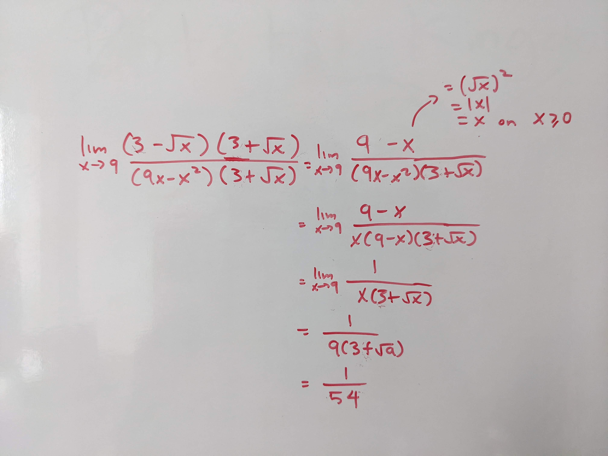
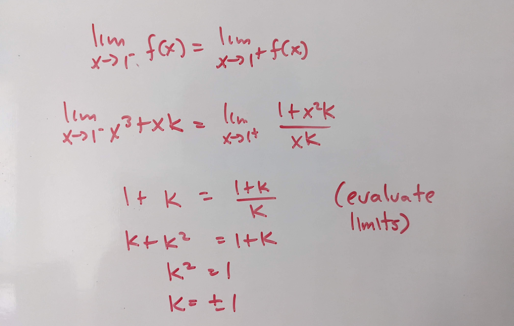

Tutorial Week 6
This week, we’ll be looking more into derivatives.
Graphing differentiability
Q1: Sketch the graph of a function that:
Has a corner at \(x = -3\)
Is discontinuous at \(x = -1\)
Has a vertical tangent at \(x = 0\)
Has a domain of \((-\infty, \infty)\)
{kind=link}
Derivative Notation
Q2: Find \(f'(x)\) if \(f(x) = 3g(k(x)) - h(x)k(x)\).
{kind=link}
Q3: Find \(\frac{df}{dx} |_{x = 3}\) if \(f(x) = x^4 + k\) for some constant \(k\).
{kind=link}
Q4: Given functions \(f(x) = 4h(x)^2\), \(g(x) = 2f(x)\), \(h'(x) = x\), \(\frac{dg}{dx} = 8x^3 + 16x\), find \(h(x)\).
{kind=link}
Q5: Given \(f(x) = x^3\), \(h\) is a function defined in terms of \(f(x)\), and \(\frac{dh}{df} = 5\), find \(\frac{dh}{dx}\).
{kind=link}
Derivatives with absolute values
Q6: Find the derivative of \(f(x) = cos(x) - |x|^3\).

Q7: Find the derivative of \(f(x) = |x + 2| + (|x - 2|)^2\).
{kind=link}
Computing derivatives
Q8: Find the derivative of \(cos(sin(tan(x))) \cdot 2x^{e}\).

Q9: Find the derivative of \(sec(\frac{csc(x)}{3x^3})\).

Q10: Find the derivative of \(\sqrt[4]{2x^3 - 4x} + 4\).

Derivative tables
Q11: Given \(f(x) = g(h(x))\), find \(g'(3)\).
\(x\) |
\(h(x)\) |
\(h'(x)\) |
\(f'(x)\) |
|---|---|---|---|
1 |
2 |
1 |
2 |
2 |
3 |
-3 |
1 |
3 |
5 |
4 |
-4 |

Q12: Using the below table, find the equation of the line perpendicular to \(f(x)\) at \(x = 1\).
\(x\) |
\(f(x)\) |
\(f'(x)\) |
|---|---|---|
1 |
7 |
-2 |
2 |
-3 |
-3 |
3 |
2 |
-5 |
{kind=link}
Piecewise function differentiability
Q13: Which values of \(k\) make \(f(x) = \begin{cases} kx^2 + k & \text{if } x \leq 1 \\ 2kx + k - 2 & \text{if } x \gt 1 \end{cases}\) continuous on its domain. Are there any values of \(k\) that make it differentiable on its domain?